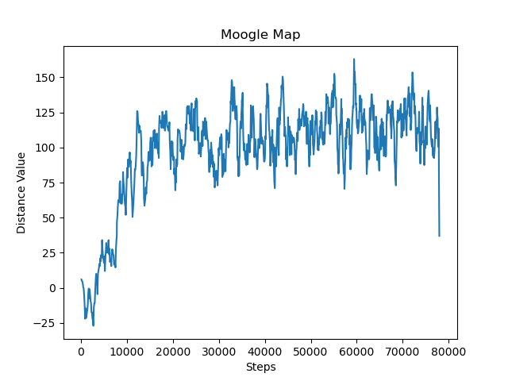
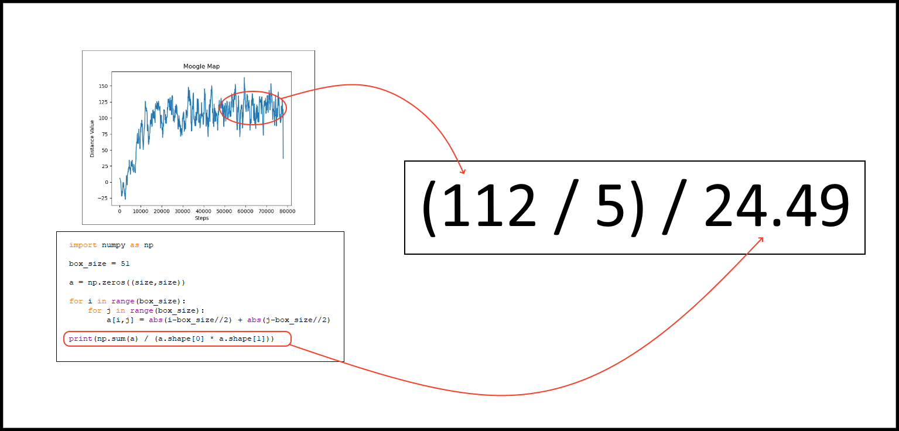
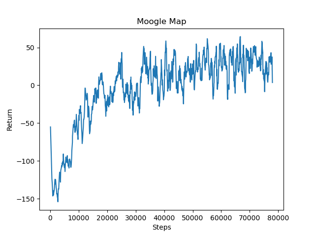

Status Report
Project Summary
This project utilizes reinforcement learning in Minecraft to teach a Minecraft agent how to travel across varying terrain to a destination. The agent is spawned at the center of the generated map encapsulated by a glass cube to stop the agent from leaving the map. The agent is required to move to a specified end coordinate randomly generated each time the agent respawns inside the map. The map will have a varying terrain including a flat map, and a map generated by perlin noise to give the agent some verticality and hills to traverse. The agent will be given the ability to move forward, rotate left, rotate right, and jump forward in order to properly path through the world. We would like the agent to optimize both its ability and speed in reaching the goal position. Thus, the agent gains rewards for moving towards the destination and gets a small negative reward for each action it takes.
Approach
We are currently working with a prebuilt rrlib reinforcement learning Proximal Policy Optimization model. This model will be updated based on the reward that the agent gets each step as it takes an action and moves across the map. The rewards are given in this way to have the agent learn to travel across the complex terrain in order to reach its destination.
Each time the agent takes an action/step, the model generates a discrete action to take: move forward one block, rotate left 90 degrees, rotate right 90 degrees, or jump forward one block. Depending on the action chosen, the agent receives -1 reward for moving forward, rotating left or rotating right. If the action jumps forward, the agent receives -2 reward. Then based on the agent's position, the agent receives a scalable positive or negative reward if the agent moves towards or away from the end coordinate respectively. The latter distance reward will help the agent optimize its ability to reach the destination, while the former ction rewards are important to help it optimize its speed in reaching the destination. In tandem these rewards will push the agent to reach the end coordinate in as few moves as possible, while avoiding slower actions like jumping unless necessary.

The observations that are received are the relative distance of the agent from the goal, and the relative heights of all the blocks around the agent within a predefined range. With these observations the agent must figure out which action it should take to get closer to the end coordinate. It has to decide if it wants to jump forward which has a greater negative reward or just rotate left or right or step forward. When the agent rotates we manipulate the observation array to rotate so that all of the knowledge passed to the agent is relative to its current state. Thus, the agent can figure out which action is most important for it to reach the goal and improve its reward. With the negative rewards for each action taken, the agent learns not to waste time with unimportant actions and to utilize its actions wisely.
Evaluation Plan
The first method that we use to evaluate our model’s abilities is through the distance values it gains each episode along with some values we can derive from it. The overall distance value of an episode will correspond to the amount of blocks the agent moved toward the goal times some scaling factor move_reward_scale. This displays the value of the reward the agent will receive for moving towards or away from the end coordinate. If the agent moves closer to the end coordinate, the distance value will go up and as it moves away, the distance value goes down. We can plot these average values out into a graph over the agents steps to see how the distance value has improved over time like below:
This particular graph was run by an agent in a 51x51 map of perlin noise terrain with a move_reward_scale of 5. Looking at the graph it is clear that our agent was able to drastically increase its ability to reach the end over the first 20,000 steps before flattening off without much more improvement. The variation seen in the graph is caused by the placement of the end point being random, as this means that the distance between the agent and the end coordinate varies so the reward the agent receives as it moves toward/away varies. This graph alone shows an improvement in the agent's ability to maneuver to the destination, but in order to get a more concrete value of its ability to move towards the goal we need to do a quick modification to the data.
We can calculate out the average percentage of the distance moved to the goal given the average distance value over a period of time, the size of the box that the agent can move in, and the move_reward_scale of that particular run. If we take the average distance value and divide it by the move_reward_scale we can get the average number of blocks that the agent moved toward the goal. Next we can tabulate out the average distance to reach any block in the box the agent moves in by just averaging over all the distances to the blocks from the center. Finally we can divide the average number of blocks we moved by the average distance to the goal to find the average percentage of the distance moved to the goal. For the graph given of the perlin noise agent, we can calculate that at the end of the run the agent was getting about (112/5)/(24.49) or 91 percent of the way to the goal on average.
The second method that we used to evaluate our models was using the overall reward that the agent gained over the episodes. This would be the positive reward of moving toward the goal combined with the negative reward gained with each action taken. We can take these values over time and then plot them to get the graph below:
This particular graph is the same run as the previous agent in a 51x51 box of perlin noise terrain with a move_reward_scale of 5. With each action taken being negative rewards, the agent does receive negative total return and these actions do not match up to the speed of the actions directly or the amount of actions taken. The values in this graph are merely indicative of the speed and efficiency of our agents movements toward the goal. This evaluation is still useful in comparing models with the same reward values and box sizes relative efficiency in reaching the goal, as taking unnecessary movements will result in a reduced score on the graph. We can see from the graph that the agent learns to be more efficient with the actions taken. It learns to not waste movements that are unnecessary and focus more on actions that help it reach the destination.
A second benefit of the graph is gained by looking at this graph in tandem with the graph of only the distance values. By comparing when both the graphs flatten out we can see if the model is able to optimize its pathing to the end or if it stops optimizing once it is able to reach the end with reasonable certainty. In the case of the agent that created these graphs we can say that it is clearly struggling with the efficiency optimization as the overall reward graph largely flattens out with the distance value graph.
Remaining Goals and Challenges
For the next 4-5 weeks, we plan on improving our reinforcement learning model in order to have the agent learn to consistently reach the end destination in complex terrains with mountains and cliffs. Currently, the agent struggles to reach the end coordinate when dealing with mountainous terrain. Terrain that cannot be moved across due to its height still can stump the agent and have it consistently jump into a wall. This is why we plan on improving our model to help our agent handle this rough terrain.
Additionally, we plan on improving our evaluation methods by displaying the height of the terrain on the movement graphs as well to give a more detailed view of movement across the terrain. This means using geographical information to improve our evaluation of the agents movements. We will be able to see how well the agent scales the hills and if it is able to learn to move over the mountains. Along with this, we plan on adding in two extra graphs that compares moves taken or time taken to the distance the agent was able to travel to the goal. These two graphs should give us a good idea about how quick the agent actually is in making it to the goal rather than implying it from its reward.
Resources Used
In order to generate the terrain for the agent to move on we used a perlin noise generator created by the user eevee on Github https://gist.github.com/eevee/26f547457522755cb1fb8739d0ea89a1 This helped us generate random mountainous terrain for the agent to navigate.
Additionally we used malmo documentation for setting up the XML environment including adjusting the time of day, types of stones, landscaping, and rewards https://microsoft.github.io/malmo/0.30.0/Documentation/index.html We also had guidance from their prebuilt examples of setting up an agent in Minecraft. https://github.com/microsoft/malmo https://microsoft.github.io/malmo/0.21.0/Schemas/Mission.html